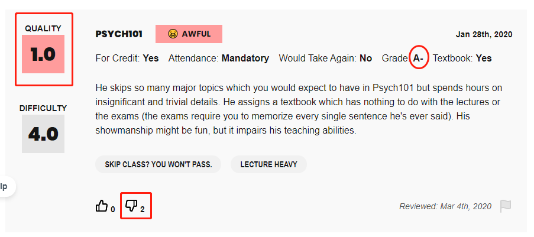

Paper-Based improvements for 'Rate My Professors'
CS490 Human-Computer Interaction, Assignment 1
Introduction
The website I am evaluating and redesigning is Rate My Professor (RMP), which is similar to JHU’s own course evaluations by previous students in courses. This page will discuss the contextual inquiry of how users engage with the pages, common problems in their searching and rating experiences, and new features for potential improvements.
Why RMP
RMP has unique advantages over internal evaluation forms- RMP evaluations are centered on professors, aggregating reviews and ratings from students since several years ago, and also from different courses and while the professors work at different institutions. Thus it is a more comprehensive review for students deciding to take courses since they do not need to go to different links to collect information.
- Students choosing colleges and have particular interests/faculty preference in mind will want to review more perspectives.
- Professor profiles are sometimes not updates, duplicated, same-name entries, and the reviews sometimes are outdated or contains wrong information.
Target Users
The scope of target users include colleges and professors covered and the referral effects attract users of various types
and purposes.
Students
- College students: enter the website to review a professor's rating of a class they are considering , and rate a professor who they have taken courses under.
- High school seniors: choose between schools and looking for specific professors, if they have a specific field of study in mind.
Professors
- Some professors check the site to learn about their own ratings, improve their teaching quality, and submit corrections of their profiles if any.
Contextual Inquiry for User Behavior and Experiences
The goal of my contextual inquiry (CI) was to determine the tasks, ease of completion of each, and the frequency/relevance/value added of each task for users.
Below, I will describe the results from observations and interviews with one user of the website. Jennie G is sophomore
majoring in Psychology and Applied Math. She is new to RMP and has only used internal course evaluation sites at JHU before.
I gave Jennie an overview of what the site is for and she decided to explore the reviewing and rating features.
Jennie started inputting JHU and the professor name right into the text fields under “Find a Professor”. She also immediately
started looking for suggested names.
Task 1: Reviewing a Professor's Rating
1. Jennie started inputting JHU and the professor name
right into the text fields under “Find a Professor”. She also immediately started looking for suggested names in the dropdown box.
Under this step, she tried 4 professors and were able to find them all. She expressed her surprise for the abundance of professor profiles available. However, once she failed to select the option and searched based on an incomplete spelling, the part name failed to show results. She hesitated for a while to find out why.
2. While browsing professors’ profiles, she mentioned that she always finds the suggested top/most useful comments very helpful as she agrees to the commentor’s opinion.
3. For a professor that she particularly liked, she saw a 1.0 score and felt the urge to dislike it but did not as she felt the required registration was too much work. She mentioned that it is useful to see that for the only negative comment that stood out, there were only disagreements, which makes the ratings overall positive, and clear-cut.
4. However, results on some pages are mixed. On another professor's page, she attempted to make a judgement from the answer endorsement numbers, but found there were far fewer likes & dislikes as she expected, 94% reactions for this professor had below 3 reactions for each. Such low numbers reduced the credibility for her. (The pictures above shows consecutive ratings of teh same professor.)
5. At the end of browsing through these pages, Jennie noticed the “tags” proportion. She quickly glanced through them and commented that she appreciated the quick overview, but that the section is so small so she did not notice them until the end.
Task 2: Rating a Professor
6. When deciding which professor to rate, Jennie chose her favorite one. When asked for the reason, she said that she would want to give endorsements most strongly for this professor. She stopped for about 10 seconds to recall the mandatory course code and guessed one. It turned out that her input is the same as almost everyone else’s, but there were indeed variations for the same course code (eg PSYCH101 and AS200101) which could create confusion. There was no dropdown menu for suggested option.
8. She revealed her grade for the course and later realized that this field is optional. She did not notice it was optional because the mandatory fields were not marked with (*) or a mandatory tag. When asked about when she would be willing to reveal grades, she said that personally she would do so if the grade was good, despite the anonymity. She also speculated a strong correlation between the A- (unsatisfactory for commenter) and the only 1.0/negative rating for this professor.
Contextual Inquiry Reflection
Overall, Jennie said that she had little difficulty in completing the task. The few times when I observed her confusion and hesitation were mentioned above.
Pros
- She was surprised that RPM has a thorough collection of professor profiles as a third-party website.
- RMP allows anonymity for more honest reviews.
Cons
- She listed credibility as her top issue, and wished to see more review entries and endorsements for each comment (30-50).
- She wished to see more filters, for more targeted information.
- She said overall she still preferred school course evaluation as that is more course-oriented and she could quickly navigate to her potential courses’ reviews on the same pdf on a webpage.
In consideration of the user types, relative population, their main intents of visiting the websites, and how painful each of the above analyzed breakdown points, I decided to focus on current college students and their searching and rating experiences. This is because the college students group have the largest visiting frequencies and user base compared to other groups using the websites, such as professors or perspectives students. They also have the highest incentive to add content/reviews to the websites or invite their friends to do so, thereby raising credibility of the site and attract more users.
Relating to personal experiences and interviewing Jennie, I believe that searching for professors and rating professors would be the most frequently performed tasks on the site, exceeding searching for schools, reading college blog posts, etc. Therefore, addressing the credibility, personalization, and presentation clarify would best serve this group.
Problem-Understanding with Sequence Diagrams
Problem breakdown and highlights
Search- Breakdown 1: Blank results of misspelled searches is not useful, would like to see suggested spellings/pages
- Breakdown 2: The professors’ orderings seem random, not alphabetical in name or school title. Makes it hard for students to scroll quickly to estimated position
- Breakdown 3: Lack of updated information on professor profiles, duplicate names with similar field interests and different institutions confuse users until they search up professors’ past employers manually
- Breakdown 4: Tags are put at a rather inconspicuous place, and some have vague interpretations.
- Breakpoint 5: Requiring sign-in or registration for endorsements, which are less value-adding and have low threshold of efforts and time to perform, is ineffective, and reduces participation in easier tasks
- Breakpoint 6: No basis of comparison, and lacks information of how this professor is placed within the department/school.
- Breakpoint 7: The total number of comments is too little to be filtered and read in depth, and reduces credibility of the website.
- Breakpoint 8: Filters are too limited. Posts could only be filtered by course number. Students may be more interested in other particular aspects, eg year, rating, endorsement percentages.
- Breakpoint 9: unresponsive dropdownW manus, and no standardized/often used suggestions.
- Breakpoint 10: Lack of personalized tags
- Validity upon non-updated and unclear information: repetitive, non-updated, and non-existing entries
- Lack of personalization: tags, filters
- Difficulty in navigation due to page layout
In consideration of the user types, relative population, their main intents of visiting the websites, and how painful each of the above analyzed breakdown points, I decided to focus on current college students and their searching and rating experiences. This is because the college students group have the largest visiting frequencies and user base compared to other groups using the websites, such as professors or perspectives students. They also have the highest incentive to add content/reviews to the websites or invite their friends to do so, thereby raising credibility of the site and attract more users.
Relating to personal experiences and interviewing Jennie, I believe that searching for professors and rating professors would be the most frequently performed tasks on the site, exceeding searching for schools, reading college blog posts, etc. Therefore, addressing the credibility, personalization, and presentation clarify would best serve this group.
Paper-Based Prototype
To improve information clarity, personalized choices, credibility, and ease to navigate.
- The school (including which college) and department
- Most popular course by the number of ratings for better reference
- Personal website, added by users, as an external source for professor identity
- Last update to alert if an entry, and thus institution column, can be outdated
These details will all be “outsourced” from the users, analyzed from the ratings and automatically updated. But manual requests to change will be accepted to, and encouraged in the case of an non-updated entry by highlighting it.
These details will also add more data points of corroboration on which is the correct page the user is looking for. This is especially helpful, since some names are common. For example, “John Smith” shows 172 search results.
The ideal level of endorsements on the page would not be a single-digits, nor will the number of likes to each comments. The picture below shows that in an ideal page there will be about 30 or more ratings for a professor, and more than 10 likes for the most helpful rating. It also displays how much weightage is for each tag people frequently associate with the professor.
To encourage more ratings and likes, we would enable easier access to starting a rating and incentivize it by making it the requirements for unlocking more reviews. The prototype page includes at least four buttons where people can access and be motivated to start their own review: “add your tags”, “write your own review”, “invite friend to review”, and “registering/writing a review to unlock hidden ratings”.
We will also NOT require log-in for simple actions like liking/endorsing a comment. For such low-threshold actions and low value-added information, we will enable users to carry them out with the least barriers possible. However, for more value-added tasks like checking reviews, we will reward them with more information if they take the motivation to add to our database. This is likely to cause more interaction levels, both easy (likes) and more complicated ones (write and read reviews).
With more reviews added to the page, we will create a larger review database, consisting of multiple ones in all past years, and for all courses. This is a unique advantage of RPM over school systems.
3. Enabling filter interested information
Not all information is of equal values to the users, and the new prototype will allow users to filter and selectively review information most needed for their specific needs. There would be a filter besides comment on each profile page to display users’ target comments.
Use case 1: Some users may believe longer comments meant more effort in writing them and would only read these of higher quality, while others who want to save time would want to read concise ones. The filter allows them to select comment lengths.
Use case 2: Some users hesitate whether to take a class if they hear mixed comments. Some have specific characteristics of courses and professors’ teaching styles that they would want to avoid and would be interested to read only what people dislike about a professor. Some would love to see the good qualities of the professor. In any way, they can choose the range of positive or negative ratings to choose from.
Use case 3: There is a higher chance that users visit RPM when considering whether to enroll in the professor’s most popular courses. The course options will be listed as well.
Select negative ->
4. Standardized input format and personalized choices in ratings
Since it is confusing for users to know what format of the course to input, they will have choices on selecting the course code for most frequently input choices. If their choice is not found, they can select the “+” sign to manually input, in which case they will also know what format (eg AMS101 vs EN.553.101) to input.
Required fields will be marked with a star, so users do not mistaken optional ones with required ones, and are less likely to drop out if inputting optional grades intimidate them.
5. Cleaner layout
This aspect involves some changes on page display details.
The older system has “find a professor by name”, “find a professor by school”, and “rate a professor on the homepage”. It might confuse users on the difference in search results between the first two. The new prototype just replaces them with one uniform button, and shows what information is required or not required for the field.
As mentioned above, professor information in search is also displayed in greater details, and the required fields in rating them marked clearly with red. Such small changes will result in better understanding and intuition on navigating through the website.
Now, the previously inconspicuous buttons, such as the tags, were also changed to more eye-catching colors eg red, to capture user attention.
Prototype Testing Video
Paper-based Prototype Evaluation
- Elaine is able to follow the entire process rather smoothly and rarely needs to be prompted to proceed.
- For the search design, Elaine was able to identify from the details on professor department, course, and school the correct page she was looking for.
- She did make a spelling mistake on searching for a long name, and was satisfied with the suggested results on misspelled searches.
- For the profile design, she was able to identify the different places that she can click to add ratings.
- Elaine was able to discover the personalization options, and filter and add tags as her wish.
- Under the new layout, Elaine could quickly locate the tags, identify mandatory input fields, etc.
- During testing, I found out that there could be more visual feedback/cues when users make a selection (eg tags no longer greyed-out when selected).
- There could be more hints to give users better intuitions on which pages the "back" icon return to.
Paper-based Prototype Evaluation
For the next steps, I would love to conduct the prototype design tests on more quantities and types of users to ensure they meet the needs of others, and test how users would explore the website and thus measure the website functions' discoverability and user experience ratings under ambiguous situations (wihtout clear instructions).